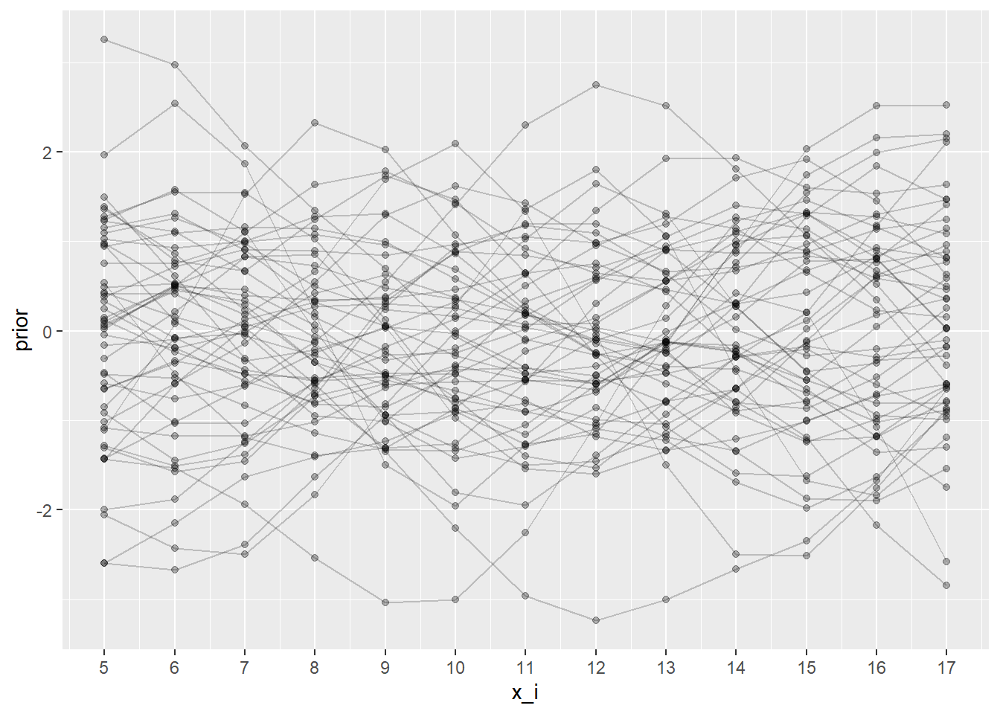
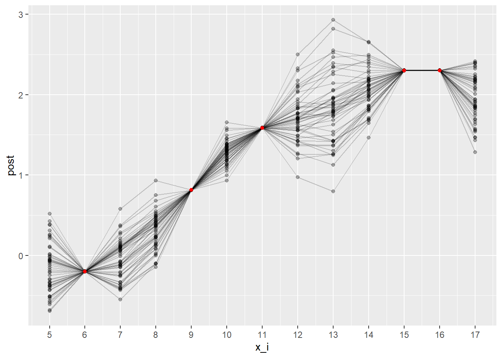
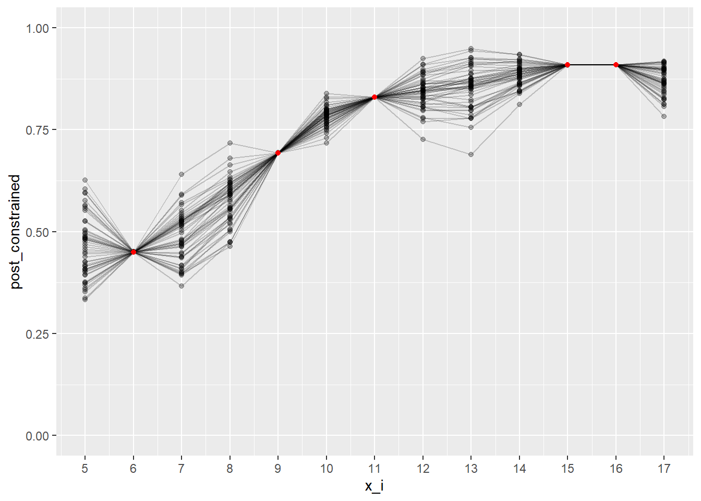
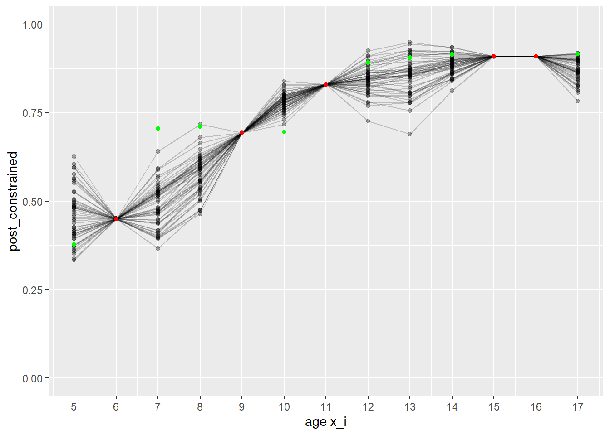

library(readr)
library(dplyr)
library(ggplot2)
library(tidyr)
library(stringr)
library(scales)
library(mnormt) # for multivariate normal
library(LaplacesDemon) # for logistic transform
invisible(lapply(list.files(here::here("R"), full.names = TRUE), source)) # load functions
#' read data
vax_raw <- readr::read_csv(here::here("data", "measles_vax-coverage-data.csv"), show_col_types = FALSE) |> filter(location %in% unique(pt_lookup()$location)) |> filter(pt!="CA") # filtering out sub-provinces etc and CA estimate
vax_schedule <- readr::read_csv(here::here("data", "measles_raw", "vax_schedule.csv"), show_col_types = FALSE)
popsize <- readr::read_csv(here::here("data", "popsize.csv"), show_col_types = FALSE)
current_year <- as.integer(format(Sys.Date(), "%Y")) # for ageing estimates
age_pre1970 <- current_year - 1969 # min age of those born strictly before 1970
#' prep data
vax_main <- vax_raw %>%
mutate(age = ifelse(is.na(age) & !is.na(year_report) & !is.na(year_birth), year_report - year_birth, age)) %>% # calc age
left_join(pt_lookup(), join_by(pt), suffix = c("", ".pt")) %>% filter(location == location.pt) %>% select(-location.pt)
vax_ON <- vax_main %>% filter(location=="Ontario") %>% filter(year_report==2023) %>% filter(n_doses %in% c("2")) # *subset of doses for the toy modelBuilding a first Gaussian Process model
Set Up
Load functions and packages. Read the standardized data and filter to province-level. Fill in age for rows where it is not specified.
As a first pass, we consider a subset of the data: Ontario, reported year 2023, 2-doses, for ages 5-17. Call this mini dataset vax_ON.
Define covariance function / covariance matrix
Use the squared exponential covariance to begin with and assume lengthscale l=2. Our dataset has 13 inputs/ independent variables (ages 5-17), so our covariance matrix is a 13x13 matrix defining the ‘relationships’ between each pair of ages.
ksqexp <- function(r,l) { # this is also defined in ksqexp.R
exp(-r^2 / (2*l^2))
}
xvals <- (vax_ON %>% mutate(age = pull_first(age)) %>% pull(age)) # a vector of ages (these x_i's are equally spaced)
npts <- length(xvals)
l <- 2
covmat <- expand_grid(x1=xvals,x2=xvals) %>% mutate(k=ksqexp(abs(x1-x2),l)) %>% # evaluation of cov function pairwise for ages x1_i and x2_i (i=1,..,n)
pull(k) %>% matrix(nrow=npts)
# could also use function generate_ksqexp_covmat() hereDefine prior distribution (N(0,cov)) and draw a sample
Define a prior ~ Normal(0,cov). It is uniquely defined with mean 0 and variance equal to our covariance matrix. Take 50 draws from the prior and plot. x_i is the vector of inputs (ages).
prior <- tibble()
for(i in 1:50) {
prior <- bind_rows(prior, tibble(draw=i, x_i=xvals, prior=rmnorm(1, rep(0,npts), covmat+1e-6*diag(npts)))) # each rmnorm is a random draw from the (multivariate) prior
}
prior %>% group_by(draw) %>% ggplot(aes(x=x_i,y=prior,group=factor(draw))) + scale_x_continuous(breaks=xvals) + geom_point(alpha=0.3) + geom_line(alpha=0.2)
Introduce observed data
For this mini dataset vax_ON (Ontario, year 2023, 2-dose, ages 5-17), we have a complete dataset of 13 data points. First expose the model to 5 data points (to see how well it can predict the remainder). We will use the logistic transform of y (logit(yobs)) which maps from [0,1] to [-inf,inf].
# observe coverage data for age 6, 9, 11, 15, 16
xobs <- as.numeric(vax_ON %>% filter(age %in% c("6","9","11","15","16")) %>% pull(age)) # can optionally add an error term here
yobs <- vax_ON %>% filter(age %in% c("6","9","11","15","16")) %>% pull(value)
tibble(xobs, yobs, logit(yobs))# A tibble: 5 × 3
xobs yobs `logit(yobs)`
<dbl> <dbl> <dbl>
1 6 0.45 -0.201
2 9 0.693 0.814
3 11 0.83 1.59
4 15 0.909 2.30
5 16 0.909 2.30 Compute posterior distribution
The posterior is uniquely defined by its posterior mean and posterior covariance matrix. First, calculate individual covariance matrices to determine the pairwise ‘relationships’ between unobserved ages xvals and observed ages xobs. Then calculate the posterior covariance matrix as kuu - kuo%*%solve(koo)%*%kou.
kuo <- generate_ksqexp_covmat(xvals,xobs,l=l) # 'relationship' pairwise between unobserved and observed ages
kou <- generate_ksqexp_covmat(xobs,xvals,l=l) # 'relationship' pairwise between observed and unobserved ages
koo <- generate_ksqexp_covmat(xobs,xobs,l=l) + 1e-6*diag(length(xobs)) # protect against non-invertibleness
kuu <- generate_ksqexp_covmat(xvals,xvals,l=l)
# calcuate posterior mean and posterior cov matrix
post_mean <- kuo%*%solve(koo)%*%(logit(yobs)) # conditional mean
post_covmat <- kuu - (kuo%*%solve(koo)%*%kou) # conditional variancePlot posterior against the data
Take 50 draws from the posterior and plot against the observed logit-transformed data. The posterior function can be used to provide estimates of our missing coverage data if inverse-transformed back to a [0,1] interval (second plot).
post <- tibble()
for(i in 1:50) { # take 50 posterior draws
post <- bind_rows(post, tibble(draw=i, x_i=xvals, post=rmnorm(1, post_mean, post_covmat + 1e-6*diag(nrow(post_covmat))))) # each rmnorm is a random draw from the (multivariate) posterior
}
post <- post %>% mutate(post_constrained=invlogit(post)) # add column to transform back to [0,1] interval
post %>% ggplot() + geom_point(aes(x=x_i,y=post,group=factor(draw)), alpha=0.3) + scale_x_continuous(breaks=xvals) + geom_line(aes(x=x_i,y=post,group=factor(draw)), alpha=0.2) + geom_point(data=tibble(x=xobs, y=logit(yobs)), aes(x=x,y=y), col="red")
post %>% ggplot() + geom_point(aes(x=x_i,y=post_constrained,group=factor(draw)), alpha=0.3) + scale_x_continuous(breaks=xvals) + scale_y_continuous(limits=c(0,1)) + geom_line(aes(x=x_i,y=post_constrained,group=factor(draw)), alpha=0.2) + geom_point(data=tibble(x=xobs, y=yobs), aes(x=x,y=y), col="red")
We can add in the remaining true data (which the model has not seen) to evaluate its performance. The true coverage values are marked as red and green points.
post %>% ggplot() + geom_point(aes(x=x_i,y=post_constrained,group=factor(draw)), alpha=0.3) + scale_x_continuous(name="age x_i", breaks=xvals) + scale_y_continuous(limits=c(0,1)) + geom_line(aes(x=x_i,y=post_constrained,group=factor(draw)), alpha=0.2) + geom_point(data=tibble(x=xvals, y=(vax_ON %>% pull(value))), aes(x=x,y=y), col="green") + geom_point(data=tibble(x=xobs, y=yobs), aes(x=x,y=y), col="red")
#ggsave(paste0("plots/post_l",l,"_ksqexp",".pdf"))Extensions
To improve this toy model, the next step would be to experiment with choice of covariance function k and lengthscale l.
We could then extend to a larger portion of the dataset by adding a second dimension (e.g. year). Geometrically, this would move from a posterior curve as on the above plot, to a posterior surface in a 3d plot / cube. We would also want to add a dimension for province, giving a posterior hypersurface in a 4d hypercube… The final model would aim to produce separate hypersurfaces for 1-dose, 1+-dose, and 2-dose. Geometry aside, this just equates to providing an estimate of coverage at each combination of age, year, province, and dose.